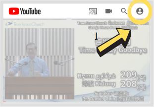
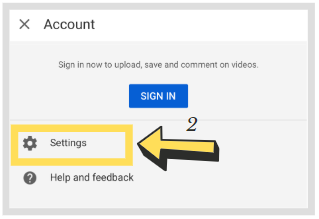
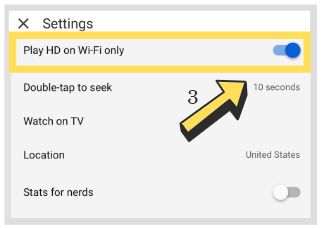

Program 节目
Please click on the date below to view the program 请点击下面的日期查看节目
Please select your preferred language 请选择您的首选语言
6/6 SATURDAY 星期六 SABTU
Registration 报名
5d 15h 45m 43s
Hymnal Session 诗颂 &
Sermon 证道 (1)
5d 17h 15m 43s
Break 休息 Rehat
Sermon 证道 Khotbah (2) &
Prayer for
the Holy Spirit 祈求圣灵 Doa Memohon Roh Kudus
5d 19h 0m 43s
Lunch Break 午休 Rehat Tengah Hari
Hymnal Session 诗颂 Sesi Menyanyi Kidung &
Witnessing Sharing Session 见证会 Sesi Kesaksian (1)
5d 22h 10m 43s
Break 休息 Rehat
Sermon 证道 Khotbah (3)
5d 23h 25m 43s
Break 休息 Rehat
Sermon 证道 Khotbah (4) &
Prayer for
the Holy Spirit 祈求圣灵
6d 0h 40m 43s
Group Photography 拍全体照 Fotografi Kumpulan
① CHOOSE an image and click ② UPLOAD
① 选择一图片,
然后单击 ②上载
① PILIH satu gambar dan klik ② MUAT NAIK
7/6 SUNDAY 星期日 AHAD
Registration 报名 Pendaftaran
6d 15h 45m 43s
Hymnal Session 诗颂 Sesi Menyanyi Kidung &
Sermon 证道 Khotbah (5)
6d 17h 15m 43s
Break 休息 Rehat
Sermon 证道 Khotbah (6) &
Prayer for
the Holy Spirit 祈求圣灵 Doa Memohon Roh Kudus
6d 17h 15m 43s
LUNCH 午餐 Makan Tengah Hari
Hymnal Session 诗颂 Sesi Menyanyi Kidung &
Witnessing Sharing Session 见证会 Sesi Kesaksian (2)
6d 22h 10m 43s
Break 休息 Rehat
Sermon 证道 Khotbah (7)
6d 23h 25m 43s
Break 休息 Rehat
Sermon 证道 Khotbah (8) &
Prayer for
the Holy Spirit 祈求圣灵 Doa Memohon Roh Kudus
7d 0h 40m 43s
Group Photography 拍全体照 Fotografi Kumpulan
① CHOOSE an image and click ② UPLOAD
① 选择一图片,
然后单击 ②上载
① PILIH satu gambar dan klik ② MUAT NAIK
Singapore Livestream from Twitch
Reminders 提示
-
Matters to keep in mind when attending the Spiritual
Meeting
参加灵恩会时，须要留意的事项
Perkara-perkara yang harus kita mengambil perhatian semasa menghadiri Kebaktian Kebangunan Rohani-Encourage the whole family to attend the Spiritual Meeting together 鼓励一家人一起参加灵恩会 Menggalakkan sekeluarga menghadiri kebaktian bersama.
-Refer to the Bible and take notes during services 要翻圣经、作笔记 Merujuk kepada Alkitab dan mengambil nota.
-Be neatly attired 衣着要整齐 Berpakaian kemas.
-Do not eat nor do other matters during the services 聚会中不可吃东西或做其他事情 Jangan makan atau melakukan perkara yang lain semasa kebaktian.
-Listen to the sermon with a quiet, godly and reverent heart 要以虔诚、安静和敬畏的心听道 Haruslah mendengar firman dengan hati yang saleh, diam dan takut akan Tuhan.
-
Please use a Wifi connection to reduce the mobile data
usage
若要减少流量消耗，请使用 Wifi
Sila gunakan sambungan Wifi untuk mengurangkan penggunaan data mudah alih.Step 1:
On the YouTube app homepage,tap the account picture at the top-right corner.
步骤 1：
在YouTube应用首页上，点击右上角的客户图片。
Langkah 1:
Di laman utama aplikasi YouTube, klik gambar akaun di sudut kanan atas.
Step 2:
Select Settings.
步骤 2：
选择设置。
Langkah 2:
Pilih Tetapan.
Step 3:
Toggle on the ‘Play HD on Wi-Fi only’ option.
步骤 3：
切换到'仅通过Wi-Fi播放高清内容'选项。
Langkah 3:
Beralih pada pilihan ‘Main HD pada Wifi sahaja’.

Contact 联系